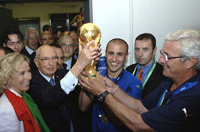
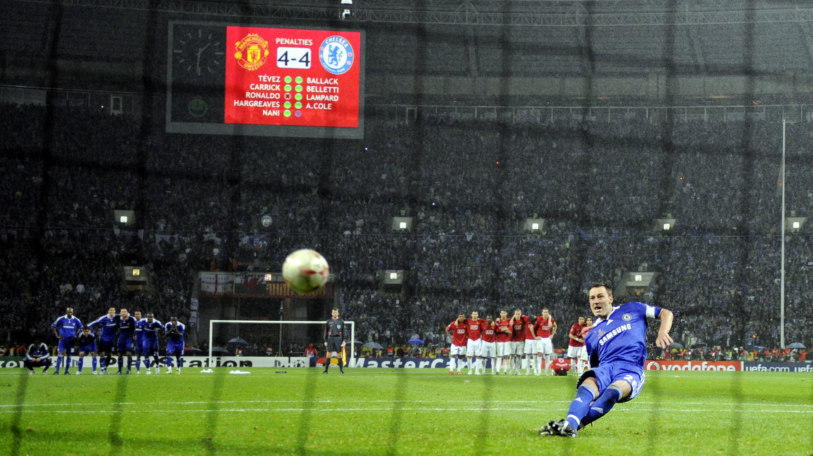

Футбол
Футбол - командный вид спорта, в котором целью является забить мяч в ворота соперника ногами или другими частями тела (кроме рук) большее количество раз, чем команда соперника.
Есть 17 официальных правил игры, каждое из которых содержит список оговорок и руководящих принципов. Эти правила предназначены для применения на всех уровнях футбола, хотя есть некоторые изменения для таких групп, как юниоры, взрослые, женщины и люди с ограниченными физическими возможностями. Законы очень часто формулировались в общих чертах, которые позволяют упростить их применения в зависимости от характера игры.
Основные правила игры в футбол
Каждому спортсмену, выходящему на поле, необходимо знать основные правила футбола. На игровой тренировке вместе с проектом BallGames это позволяет снизить количество конфликтных ситуаций и повысить качество игрового процесса. Полные правила игры в футбол вы всегда можете прочесть, скачав их с нашего сайта, а мы изложим правила футбола кратко, но, по существу.
Футбол – это игра с мячом, полевым игрокам в которой можно касаться снаряда всеми частями тела, кроме рук. Цель игры – забить как можно больше мячей в ворота соперника. Футбольный матч всегда состоит из 2 таймов по 45 минут с перерывом в 15 минут. Судья может назначить дополнительное время после каждого из периодов, равное затраченному ранее на замены, оказание медицинской помощи или в случае умышленного затягивания. В классическом варианте от одной команды на поле выходит 11 игроков. Максимальное количество запасных игроков равняется семи, а возможных замен три или более, например, в товарищеских матчах. Форма игроков должна отличаться от судейской и вратарской. Основные термины мы изложили в другой статье. Настоятельно советуем ознакомиться, чтобы адекватно понимать ход игры.